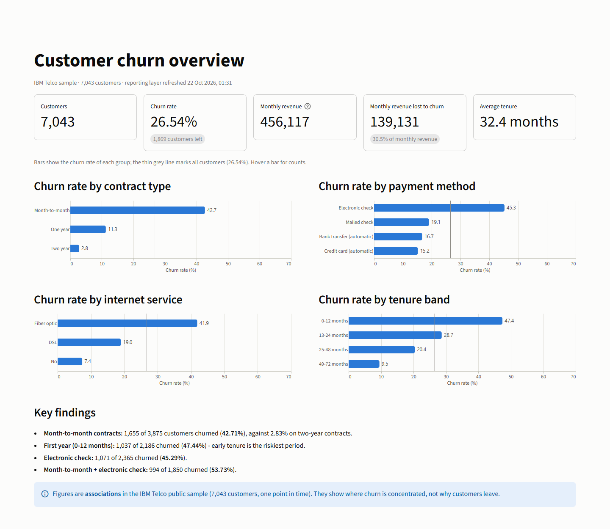
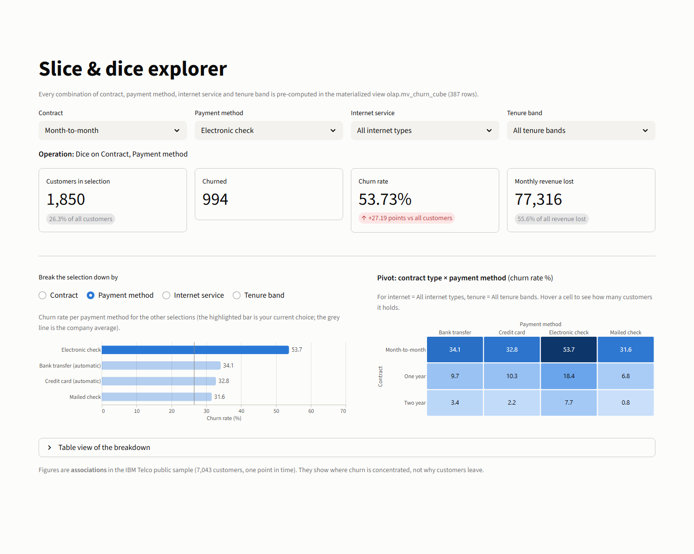
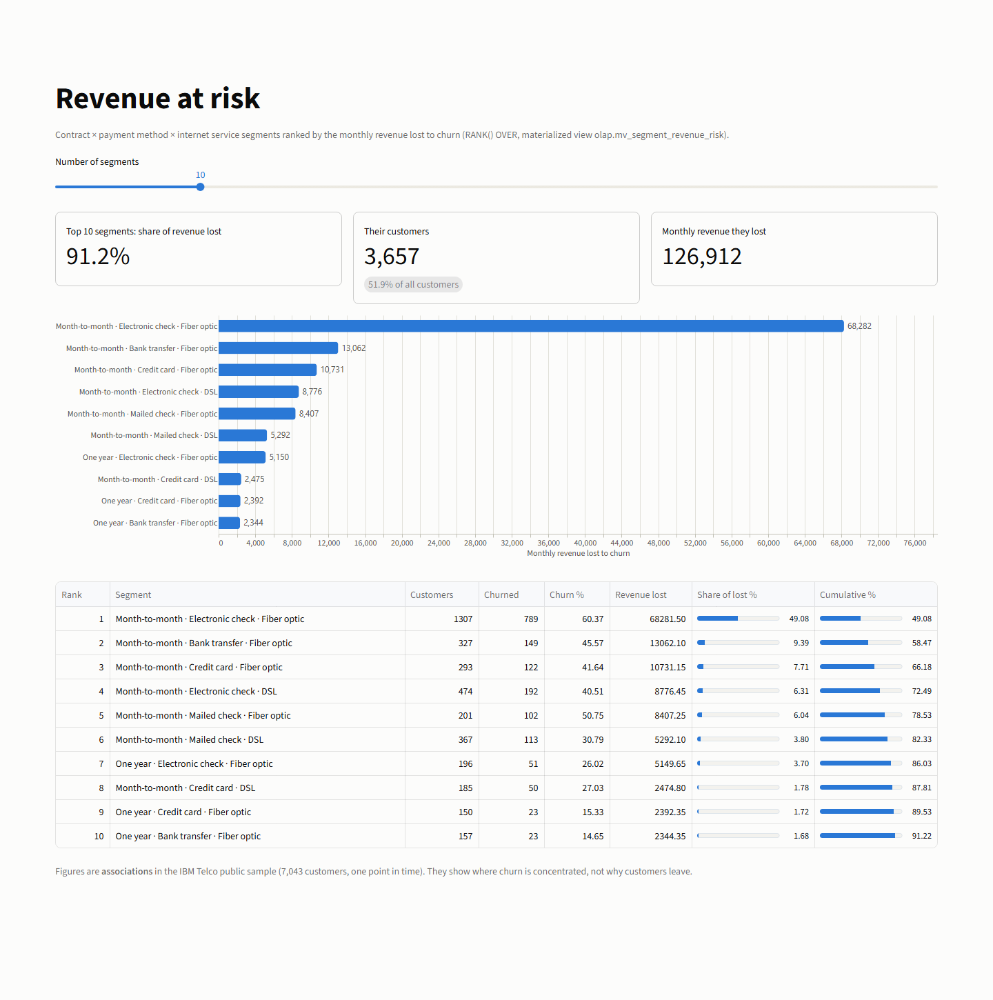
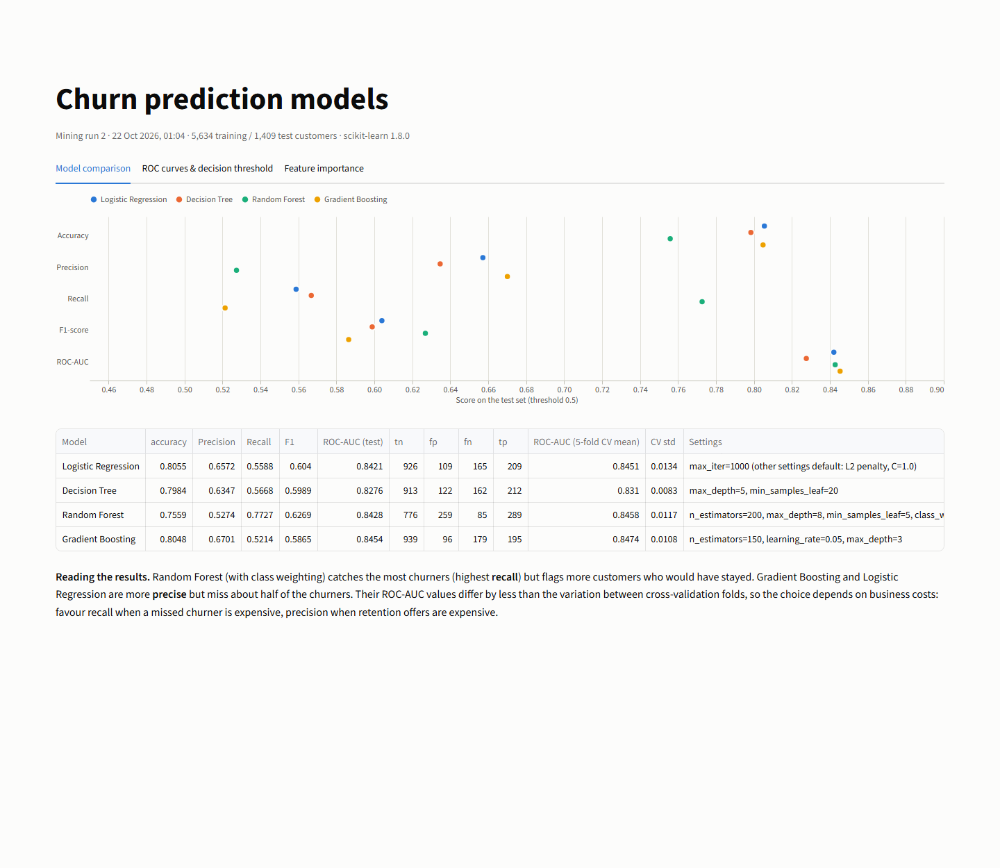
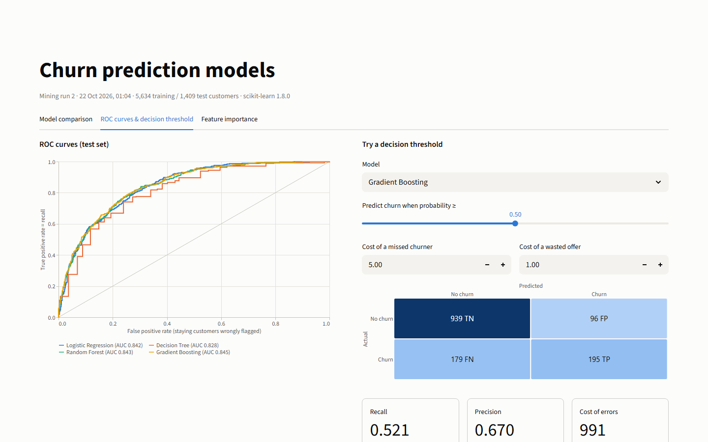
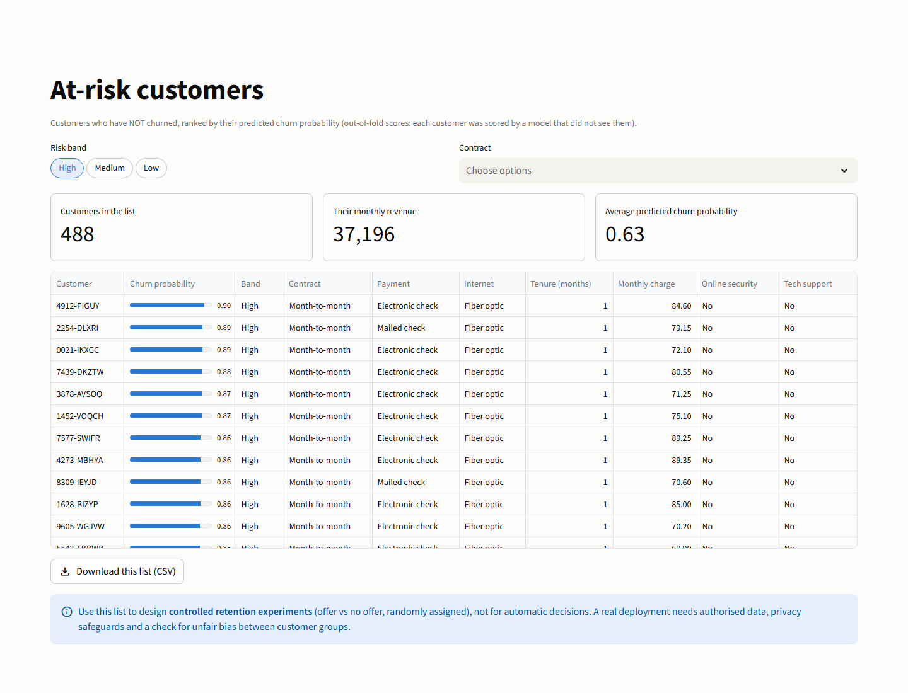

An end-to-end Enterprise Data Warehouse with a PostgreSQL star schema, 4 supervised machine learning models, and real-time interactive decision support.
Test real customer profiles in real-time. The scoring engine evaluates contract, tenure, add-ons, and charges to calculate instant churn probabilities.
Leakage-safe preprocessing pipeline with 80/20 train/test split (5,634 train / 1,409 test) and 5-fold Stratified Cross-Validation on the PostgreSQL warehouse.
| Model Algorithm | Accuracy | Precision | Recall | F1-Score | Test ROC-AUC | 5-Fold CV Mean | Primary Strength |
|---|---|---|---|---|---|---|---|
| Gradient Boosting | 80.48% | 67.01% | 52.14% | 0.586 | 0.845 | 0.847 ± 0.011 | Highest precision & top discrimination |
| Random Forest (Balanced) | 75.59% | 52.74% | 77.27% | 0.627 | 0.843 | 0.846 ± 0.012 | Catches 77% of churners (high recall) |
| Logistic Regression | 80.55% | 65.72% | 55.88% | 0.604 | 0.842 | 0.845 ± 0.013 | Interpretable coefficients & fast inference |
| Decision Tree | 79.84% | 63.47% | 56.68% | 0.599 | 0.828 | 0.831 ± 0.008 | Direct rule-based segmentation |
Default models predict churn at probability ≥ 0.50. Adjust the decision threshold and dollar error costs to find the financial optimum for your retention campaign.
Identifies features with the highest impact on model ROC-AUC on holdout test data. Shows where customer churn is concentrated.
Organized into 3 clean analytical tiers: Staging (Layer 1) -> Dimensional Warehouse (Layer 2) -> OLAP Reporting & Mining (Layer 3).
Click any view to inspect screenshots of the live interactive dashboards, OLAP explorers, and admin panels.





